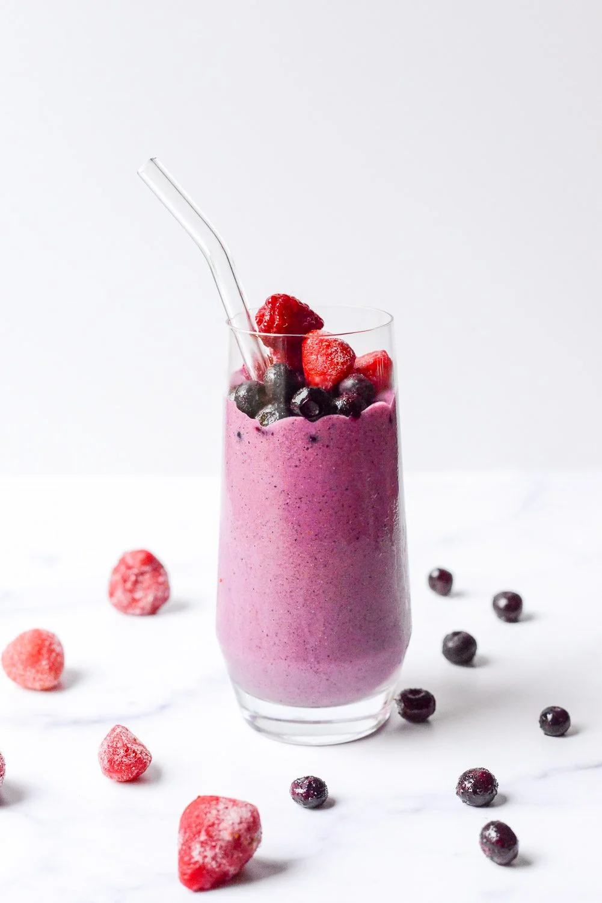

Berry Protein Smoothie

Description
A nutrient-dense , high-protein smoothie designed for entrepreneurs who need sustained energy, mental clarity, and peak performance throughout the day.
Packed with antioxidants, protein, fiber, and healthy fats , this smoothie fuels your body and brain without the sugar crash.
Ingredients
- 1 cup mixed berries ( blueberries, strawberries, raspberries, or blackberries )
- 1 scoop protein powder ( whey, plant-based, or collagen )
- ½ banana
- 1 tbsp chia or flax seeds
- ½ cup Greek yogurt (or almond milk for dairy-free option)
- ½ cup oats
- 1 tsp honey or maple syrup (optional)
- ½ cup water or ice cubes
Steps
- Prepare Ingredients: Wash the berries and measure all ingredients.
- Blend: Add all ingredients into a blender.
- Mix Until Smooth: Blend for 30-45 seconds until creamy and well-mixed.
- Adjust Consistency: Add more water or ice if needed and blend again
- Serve & Enjoy: Pour into a glass and fuel your productivity!
home page